Introduction
QALIPSIS is an open-source, enterprise-grade load and performance-testing tool especially designed for distributed systems.
It can also run on standalone systems enabling users get the best from both worlds – simplicity and scalability.
Boasting a high degree of flexibility, QALIPSIS allows users to configure action paces and repetitions for seamless load-test campaigns.
To achieve this, QALIPSIS brings different core concepts together:
-
Scenarios: QALIPSIS’ scenarios are the single largest components a developer has to put in place in order to run a load test. They contain the steps with a detailed description of all the operations to accomplish, their dependencies, as well as the assertions to ensure everything performs as expected.
-
Steps: Steps are the central components for working with QALIPSIS and can be developed in Kotlin, Groovy or Java, using either JUnit-like classes or the fluent API. Steps, to a large degree, are dependent on data sources, results of other steps or assertions to execute or use their data.
-
Assertions: Assertions make it easy to perform cross-checks of data and durations from different sources. Validating data persistence, message exchanges or requests to remote systems has never been so easy. Durations can also be set and tested in order to verify the overall responsiveness of the system.
-
Minions: QALIPSIS can simulate website users, IoT devices or other systems. They are handled by a minion, which performs a complete scenario. You can even create millions of minions. Unlike other load-testing tools, due to the very low memory footprint, you can perform these tasks on a standard computer.
-
Head: QALIPSIS doesn’t only test distributed systems, but also runs as one. When a user needs to perform load tests at scale, or from different geographical locations, the user needs only to set up a cluster. The head component is only responsible for orchestration and reporting.
-
Factories: In an QALIPSIS cluster, the factories are the distributed components which host the minions to execute the load tests and assertions. Testers can even change the number of factories on-the-fly so as to optimize the load and cost of the testing infrastructure.
Now you can imagine all the incredible things you can achieve with QALIPSIS, create your first scenario and verify your sofware is working as you expect!
What’s new
Well, actually everything is new in QALIPSIS.
Major changes of releases will be visible here.
With the current draft version (0.2.0-SNAPSHOT), you can create scenarios with different branches, even running with a lot of minions.
Many core steps and plugins will help you to fire load on your systems and feed QALIPSIS with data to verify.
QALIPSIS runs standalone, history of events and metrics can be either logged or saved in Elasticsearch.
Next evolutions will bring you much more plugins, steps for statistics and QALIPSIS as a cluster. Stay tune!
Quickstart
The following sections will bring you through the successive steps to create your first "Hello World" scenario.
Before you get further, ensure you have installed Java 11 or above SDK. While you can develop a complete scenario with a text editor, we encourage you to use a suitable IDE such as IntelliJ or Eclipse.
Create a project with Gradle - Kotlin DSL
Create a new project for Gradle with your IDE, using the Kotlin DSL.
1
2
3
4
5
6
7
8
9
10
11
12
13
14
15
16
17
18
19
20
21
22
23
24
25
26
27
28
29
30
31
32
33
34
35
36
37
38
39
40
41
42
43
44
45
46
47
48
49
50
51
52
import com.github.jengelman.gradle.plugins.shadow.tasks.ShadowJar
import org.jetbrains.kotlin.gradle.tasks.KotlinCompile
plugins {
application
kotlin("jvm")
kotlin("kapt")
id("com.github.johnrengelman.shadow") version "6.0.0" // <1>
}
description = "Qalipsis Quickstart" // <2>
// Configure both compileKotlin and compileTestKotlin.
tasks.withType<KotlinCompile>().configureEach {
kotlinOptions {
jvmTarget = JavaVersion.VERSION_11.majorVersion
javaParameters = true
}
}
dependencies {
implementation(kotlin("stdlib")) // <3>
implementation("io.qalipsis:api-dsl:0.2.0-SNAPSHOT") // <4>
implementation("com.willowtreeapps.assertk:assertk:2.0.3") // <5>
implementation("com.willowtreeapps.assertk:assertk-jvm:2.0.3") // <5>
runtimeOnly("io.qalipsis:runtime:0.2.0-SNAPSHOT") // <6>
kapt("io.qalipsis:api-processors:0.2.0-SNAPSHOT") // <7>
}
application { // <8>
mainClassName = "io.qalipsis.runtime.Qalipsis"
applicationDefaultJvmArgs = listOf("-noverify", "-XX:TieredStopAtLevel=1", "-Dcom.sun.management.jmxremote",
"-Dmicronaut.env.deduction=false")
this.ext["workingDir"] = projectDir
}
tasks { // <9>
named<ShadowJar>("shadowJar") {
mergeServiceFiles()
archiveClassifier.set("qalipsis")
}
}
tasks { // <10>
build {
dependsOn(shadowJar)
}
}
| 1 | The executable file is packaged as a "fat JAR" using the shadow plugin, containing all the dependencies required to run QALIPSIS and your scenario. The file is bigger but portable. |
| 2 | Update the description to customize your project |
| 3 | Dependencies required to develop scenarios with Kotlin |
| 4 | Dependencies required to develop scenarios for QALIPSIS, whatever the language is |
| 5 | When verifying the data in a scenario, you might like to use a test or assertion library you are familiar with, feel free to use JUnit, AssertJ or AssertK, Hamcrest or any other. |
| 6 | Dependencies to execute QALIPSIS, either as a head or factory. |
| 7 | Dependencies to perform the annotation processing at compile time. It is very important to prepare the later execution. |
| 8 | Default configuration or the application, if you ever want to test it locally. This is optional, but often helpful. |
| 9 | When the "fat JAR" will be packaged, we want to add a classifier on the artefact to distinguish it from the "normal JAR". |
| 10 | Include the creation of the "fat JAR" in the standard build workflow. |
If you are using a snapshot version of QALIPSIS, add https://oss.sonatype.org/content/repositories/snapshots as a dependency repository.
|
Setting up your IDE
QALIPSIS relies on annotation processing at compile time to prepare the executable code and list the scenarios to later execute.
Furthermore, QALIPSIS relies on Micronaut IoC framework, which requires the following setup.
IntelliJ
Please follow the instructions provided by Micronaut’s team in section for IntelliJ.
Eclipse
Please follow the instructions provided by Micronaut’s team in section for Eclipse.
Visual studio code
Please follow the instructions provided by Micronaut’s team in section for Visual Studio Code.
Create a scenario
in the following sections, we will learn how to create a scenario specifications that simulates minions starting with a ramp-up, write a message on the console and stop.
Scenarios can be created in classes or Kotlin objects or as a Kotlin function. Names do not matter, the only important thing is to annotate the method:
1
2
3
4
5
6
7
8
9
10
11
12
package my.example
import io.qalipsis.api.annotations.Scenario
class HelloWorldScenario {
@Scenario
fun myScenario() {
}
}
| Due to the incremental compilation not yet fully taken into account in QALIPSIS annotation processor, you should clean the output / build directory when you delete or rename the package or class containing a scenario method. The risk is to have a scenario listed to be executed at runtime, which no longer exists. |
You can create several methods with the @Scenario annotation in the same class / object.
|
It is now time to develop the scenario. In the annotated method, create a new scenario and configure it:
1
2
3
4
5
6
7
8
9
@Scenario
fun myScenario() {
scenario("hello-world") { (1)
minionsCount = 1000 (2)
rampUp {
regular(1000, 50) (3)
}
}
}
| 1 | Creates a new scenario called "hello-world" (see [Scenario] for more details) |
| 2 | Defines the default number of minions to execute, which you can change at runtime (see Runtime configuration for more details), they are the number of simulated users or systems that generate load: the more the minions, the more the load |
| 3 | Defines the strategy to start the minion, which you can make faster or slower at runtime (see Runtime configuration for more details) |
Specify where the load should be injected
If you consider the scenario as a directed graph joining the steps / actions to execute, you will see that it is possible to have:
-
several roots
-
two branches joining the same step (like a Y)
-
one step distributing two branches (like a ⅄)
In all those branches, you will have to identify when the load should be injected.
1
2
3
4
5
6
7
8
9
10
@Scenario
fun myScenario() {
val myScenario = scenario("hello-world") {
minionsCount = 1000
rampUp {
regular(1000, 50)
}
}
.start() (1)
}
| 1 | The start() statement locates the root of the tree, receiving the load of all the minions at runtime. |
Add steps to your scenario
Now you can add all the steps you want! Let’s go further in our "hello world" scenario.
1
2
3
4
5
6
7
8
9
10
11
12
13
14
15
16
17
18
19
20
21
22
23
24
25
26
27
28
29
@Scenario
fun myScenario() {
val myScenario = scenario("hello-world") {
minionsCount = 1000
rampUp {
regular(1000, 50)
}
}
.start()
.returns<String> { context -> (1)
"Hello World! I'm the minion ${context.minionId}"
}
.shelve { mapOf("started at" to System.currentTimeMillis()) } (2)
.map { str -> str!!.toUpperCase() } (3)
.unshelve<String, Long>("started at") (4)
.verify { (5)
assertThat(it).all {
prop(Pair<String, Long?>::first).startsWith("HELLO")
prop(Pair<String, Long?>::second).isNotNull().isPositive()
}
}
.execute<Pair<String, Long?>, Unit> { ctx -> (6)
val input = ctx.receive()
println("${input.first} and finished after ${input.second!! - start} ms")
}
.configure {
iterate(2, 1000) (7)
}
}
| 1 | You declare the first step as root of the tree on the scenario, and is generally responsible for generating data to be used in the rest of the tree. |
| 2 | Data can be cached for later use. |
| 3 | Transforms the record. |
| 4 | Retrieves a value previously added to the cache. |
| 5 | Verifies the records using your assertion library of choice, here assertk. |
| 6 | Executes a totally free operation on the step context: you can do whatever you want here, such as printing the "Hello world" message in the console with the start time. |
| 7 | And if you like it, you can repeat it several times with an interval. |
Et voila! You’ve just created your first scenario. It is not really useful, but you went through the most important concepts of creating a scenario.
Now you are ready to go further in the documentation and create scenarios that are really relevant for your system.
Scenario specification
What is a scenario specification?
In order to provide the maximum flexibility to configure a scenario and the best performance while executing it, we decided to split its configuration from its execution.
We call the configuration phase "specification". Specifications for scenarios and steps are the elements you develop using QALIPSIS' DSL.
Configuring a scenario specification
A word about operators
So that you can create a scenario, QALIPSIS provides operators to either create or configure a scenario or a step.
QALIPSIS provides some operators for the common use cases, and plugins bring others to extend the scope of the features you can use, such as scenario, configure, map, delay and many others.
You will discover a certain numbers of operators in the next sections, but the list is actually infinite, because you can create yours. See Create your own plugin for more details.
Creating a scenario
A scenario specification is made of several parts:
1
2
3
4
5
6
7
8
9
10
@Scenario
fun myScenario() {
val myScenario = scenario("hello-world") { (1)
(2)
}
.start() (3)
.returns { (4)
}
}
| 1 | Call to the scenario function, which instantiate a new scenario specification with the provided name. |
| 2 | Default configuration of the scenario, see Default configuration of the scenario for more details. |
| 3 | Identification of the root of the tree receiving the load of all the minions: there is only one per scenario, see Load-injected tree for more details. |
| 4 | Addition of the step specifications to the tree. |
Default configuration of the scenario
Number of minions
Optional, default to 1
Whether you want to simulate users, IoT devices or third-party systems, you will identify each of them to a unique minion. The more minions, the more load. They execute concurrently and through the all trees. You can specify their default number:
1
2
3
4
5
6
@Scenario
fun myScenario() {
val myScenario = scenario("hello-world") {
minionsCount = 1000 (1)
}
}
| 1 | 1000 simulated users, IoT devices or third-party systems will execute the scenario concurrently. |
| While Load-injected trees will be visited by the number of minions you specified, the others will get only one. |
Ramp-up
Mandatory
Once you specified the number of minions you want to inject in your scenario, you need to specify how they will start to be active.
You can use different strategies out-of-the-box or your own implementation.
Accelerating
The following example starts 10 minions every 2000 ms, then (2000 / 1.5) ms, then (2000 / 1.5 / 1.5) ms… until the interval reaches 200 ms. From that point, 10 minions are started every 200 ms, until they all are active.
1
2
3
4
5
6
7
8
@Scenario
fun myScenario() {
val myScenario = scenario("hello-world") {
rampUp {
faster(2000, 1.5, 200, 10)
}
}
}
The speed-factor at runtime will be applied to the multiplication factor: a speed factor of 2 will reduce the interval twice faster.
Increasing the volume of minions
The following example starts minions every 200 ms: first 10, then 20 minions after 200 ms, 40 new minions after 200 ms, to the limit of 1000 minions every 200ms until they all are active.
1
2
3
4
5
6
7
8
@Scenario
fun myScenario() {
val myScenario = scenario("hello-world") {
rampUp {
more(200, 10, 2.0, 1000)
}
}
}
The speed-factor at runtime will be applied to the multiplication factor: a speed factor of 2 will increase the number of minions at each shot twice faster.
Regular ramp-up
The following example starts 10 minions every 200 ms.
1
2
3
4
5
6
7
8
@Scenario
fun myScenario() {
val myScenario = scenario("hello-world") {
rampUp {
regular(200, 10)
}
}
}
The speed-factor at runtime will be applied to the interval: a speed factor of 2 will divide the interval by 2.
Time frame
The following example starts an equal number of minions every 20 ms, so that they all are active after 40000 ms.
1
2
3
4
5
6
7
8
@Scenario
fun myScenario() {
val myScenario = scenario("hello-world") {
rampUp {
timeframe(20, 40000)
}
}
}
The speed-factor at runtime will be applied to the interval: a speed factor of 2 will divide the interval by 2.
User defined
This strategy is totally open to your creativity or needs and consists of returning a MinionsStartingLine considering the previous period in milliseconds, the total number of minions to start and the speed factor to apply.
The following example first release 100th of all the minions after 1000 ms, then apply different rules depending on the past interval:
-
If the previous interval was longer than 2 seconds, 100th of all the minions are released after 100ms;
-
Otherwise, a random interval is calculated applying the speed factor to reduce it, in order to start 10th of all the minions.
Whatever the definition you choose, no more minions than the total number can be launched. Generating a negative interval results in an immediate start.
1
2
3
4
5
6
7
8
9
10
11
12
13
14
15
@Scenario
fun myScenario() {
val myScenario = scenario("hello-world") {
rampUp {
define { pastPeriodMs, totalMinions, speedFactor ->
when {
pastPeriodMs == 0L -> MinionsStartingLine(totalMinions / 100, 1000)
pastPeriodMs > 2000 -> MinionsStartingLine(totalMinions / 10, 100)
else -> MinionsStartingLine(totalMinions / 10,
((1000 + pastPeriodMs * Math.random()) / speedFactor).toLong().coerceAtLeast(200))
}
}
}
}
}
When calling the first iteration of the user-defined strategy, the initial value of pastPeriodMs is 0. However, you can use your own variable to verify if this is the first iteration or not.
|
Retry policy
Optional, default set to no retry
Execution of steps can failed for different reasons: unreachable remote host, invalid data…
When a step execution throws an exception, it can be retried considering the context. Once all the attempts were executed, the step execution context is marked as exhausted and only the Error processing steps are then performed.
While you can specify the retry policy individually for each step, it is also possible to define a default policy to avoid redundant statements in the steps specifications.
There is no provided RetryPolicy in QALIPSIS for the moment.
You can create your own implementation to match your need, basic are to come soon.
|
1
2
3
4
5
6
@Scenario
fun myScenario() {
val myScenario = scenario("hello-world") {
retryPolicy(instanceOfRetryPolicy)
}
}
Load-injected tree
A scenario is a combination of directed acyclic graphs containing, joined by steps.
There might be several graphs starting concurrently at the scenario root, but only one is visited by all the minions generating the load. Others are considered as "side-trees" to provide data to verify, for later joins or similar.
You can identify which graph is the root receiving the load with start():
1
2
3
4
5
6
7
8
9
10
11
12
13
14
15
@Scenario
fun myScenario() {
val myScenario = scenario("hello-world") {
minionsCount = 1000
rampUp {
regular(1000, 50)
}
}
myScenario.start() (1)
.returns<String>{ "My input" }
myScenario (2)
.returns<String>{ "My other input" }
}
| 1 | The start() statement locates the root of the tree, receiving the load of all the minions at runtime. |
| 2 | The second branch is visited by a unique minion and generally consists of iterative operations (polling of datasources…). |
Note that only one use of start() is permitted, as well as only one step after it.
If you ever need to create two branches with the load injected, you can do the following:
1
2
3
4
5
6
7
8
9
10
11
12
13
14
15
16
17
18
19
20
@Scenario
fun myScenario() {
val myScenario = scenario("hello-world") {
//
}
.start()
.tube() (1)
.split { (2)
execute{ (3)
// ...
}
.map {
}
flatten() (3)
.filterNotNull()
}
}
| 1 | tube() is a no-operation step, that simply forwards the input to the output. |
| 2 | split {} can be used to provide the output of a unique step to several ones, see Fan-out for more details. |
| 3 | After tube(), two branches are diverging: one with the steps execute{}.map{} and a second with flatten().filterNotNull().
They both are run concurrently after each execution of tube(). |
Singleton step vs. non-singleton step
What is a singleton step?
A singleton step is designed to be executed once and only once. Its operation is not to simulate the load of minions but to provide them data they can use to feed other steps or verify that things were done expectedly in the tested system.
A good example of a singleton step is a database poller, a message consumer.
While the singleton step is executed only once, it actually provides data to all the minions going through.
Want more details?
A singleton step does not defer from other steps. It is executed using a minion, which looks like any other. But, even if it is created on a branch where the load is injected, it remains aside and is proxied.
The proxy will be executed by all the minions going through the branch, while the singleton step will only have its own one, only aiming at triggering its operation: polling, reading a file, starting a message consumer…
The singleton step and its proxy are connected by a topic, which actually defines the way the polled / read / consumed records are provided to the minions.
Distributing data from the singleton to the load minions
For convenience purpose, QALIPSIS proposes three different modes of distributing records out of a singleton step.
| If you plan to develop your own singleton step, read carefully Create your own plugin, where you will find how to achieve it without any effort. QALIPSIS provides all the required statements how of the box. |
Loop
When the number of records emitted by the singleton step is finite (such as a file), you might want to loop in the whole set of data to be sure there will always be data for your minions.
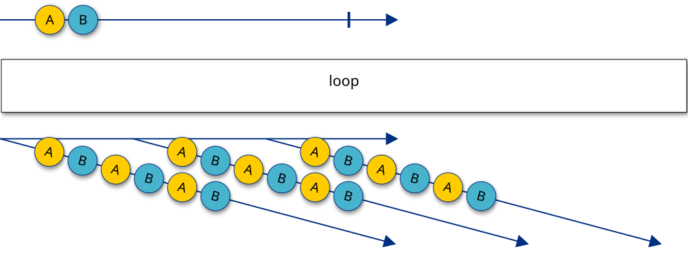
All minions receive all the records. When there is no more data for a minion, it receives the same data again from the beginning and loops on the whole set of records as long as it needs new ones.
Unicast / Forward once
Each minion receives the next unused record emitted from the step. Once there are no more record to provide, all the minion will remain in the step.
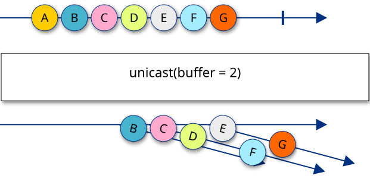
In the example, each of the 3 minions receives a record fairly: the first asking is served. However, since the buffer is only 2, the first records are just lost, keeping only a buffer of 2 until the first minion requests a value.
Broadcast
All the minions receives all the records from the beginning. Once there are no more record to provide, all the minion having already received all the records will remain in the step.
If the size of the buffer is limited, minions landing in the step for the first time will not receive everything from the beginning but only from the size of the buffer.
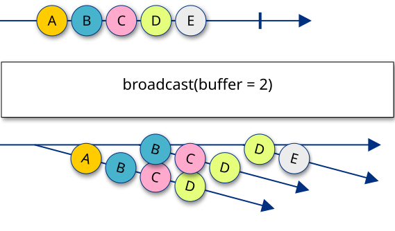
In the example, the all 3 minions receive all the records in the correct order. However, since the buffer is only 2, each newly requesting minion can only receive two records in the past at the earliest.
Steps specifications
Configuring a step specification
Depending on their nature, you can define steps specifications as root of a scenario or successor of another step specification.
1
2
3
4
5
6
7
8
9
10
11
12
13
14
15
16
17
18
19
20
21
22
23
24
25
26
scenario("hello-netty-udp-world") {
minionsCount = 100
rampUp {
// Starts all at once.
regular(100, minionsCount)
}
}
.start()
.netty()
.tcp { (1)
name = "my-tcp"
connect {
address("localhost", availableTcpPort)
noDelay = true
}
request { tcpRequest1 }
metrics { connectTime = true }
events { connection = true }
}
.reuseTcp("my-tcp") { (2)
name = "reuse-tcp"
iterate(20, Duration.ofMillis(100))
request { tcpRequest2 }
}
| 1 | The tcp step is defined as first step of the graph, differently said as root - hence, it expects Unit as input |
| 2 | The reuseTcp step is defined as successor of tcp and receives its output as input. |
There are two ways of configuring a step specification.
Some receive the configuration closure as parameter like the tcp step above.
Generally, you can also call configure
after a step to configure it:
1
2
3
4
5
6
7
8
9
reuseTcp("my-tcp") {
request { tcpRequest2 }
}.configure {
name = "reuse-tcp" (1)
iterate(20, Duration.ofMillis(100)) (2)
retryPolicy(instanceOfRetryPolicy) (3)
timeout(2000) (4)
}
| 1 | Set a name to your step: this is convenient for analysis of events, successes, failures - the same name can be used in several scenario specifications, which helps for cross-analysis and reusability. |
| 2 | Repeat the step 20 times with an interval of 100 ms between one execution and the next one. |
| 3 | Step-own retry policy, see Retry policy for more details. |
| 4 | Timeout to complete the step execution, in ms. Note that if a retry policy is set that allows another attempt, a timeout error will lead to a new execution. |
Fan-out
When you want to split a branch and add two concurrent steps as successors, you can use the split:
1
2
3
4
5
6
7
8
9
10
execute { }
.split { (1)
map { ... } (2)
.validate{ ... }
flatten() (3)
.filterNotNull()
}
| 1 | split takes a closure with the step anyStep as receiver. |
| 2 | The first branch receives the output of anyStep as input. |
| 3 | The second branch also receives the output of anyStep as input but does something different with. |
Here is the graphical representation:
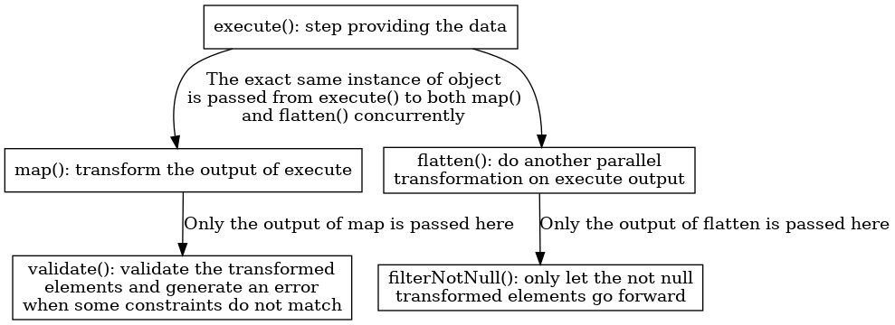
| Both branches run concurrently, their no defined execution order. |
If the entity returned by anyStep is mutable, take care of not altering it in one branch, because this would have side-effects on the other.
Prefer creating deep clones.
|
Fan-in / Joins
Because you split a scenario into different branches or want to verify data from different sources, you often need to join them. You can either do it using the name of a concurrent step:
1
2
3
4
5
6
7
8
execute { } (1)
.innerJoin<EntityWithKey, EntityWithId>(
on = { "${it.key}" }, (2)
with = "my-datasource-poll-step", (3)
having = { it.id } (4)
)
.map { } (5)
| 1 | execute provides an output of type EntityWithKey, with a field key being an Int.
We call this step the "left" step. |
| 2 | We provide a calculation of the key from the left side and decide to convert it as a String. |
| 3 | The step called my-datasource-poll-step is declared in a parallel branch (or earlier in the same branch) and provides an output of type EntityWithId with a field id being a String. |
| 4 | Closure to extract the key from the right side, being already a String. |
| 5 | The result is a Pair<EntityWithKey, EntityWithId> where string representation of key of the EntityWithKey equals to the field id of the EntityWithId. |
Records coming from the right side are kept in a cache until one comes from the left side with the same key. Once used, they are evicted from the cache.
When a flow comes from the left side but has no corresponding record yet coming from the right, it waits until the defined timeout on the step. See Configuring a step specification for more details.
The step context after the join inherits from the one coming from the left.
Here is the graphical representation:
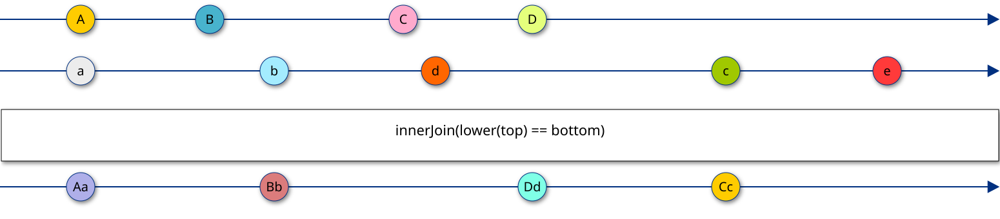
You can also create a step directly in the join:
1
2
3
4
5
6
7
8
9
10
11
12
execute { }
.innerJoin<EntityWithKey, EntityWithId>(
on = { "${it.key}" },
with = { (1)
r2dbc().poll{
// ...
}
},
having = { it.id }
)
.map {}
| 1 | Things are working exactly the same as in the first example, but the step is directly created here.
The receiver of the with is the scenario. |
Error processing steps
When an error occurs when executing a step, after all the potential retries, the step context being carried from top to bottom is marked as "exhausted".
From that point of the process, only the steps relevant for error processing are executed, the others are simply bypassed.
Those steps from the core are:
-
catchError: takes the collection of errors as parameter to process them. -
catchExhaustedContext: takes the full exhausted step context as parameter, where you can also set theisExhaustedflag tofalsein order execute next steps.
Core operators
QALIPSIS provides default operators to tweak the execution of your scenario, that do not require the addition of plugins to your classpath.
While you already know some of them described just above, others are available to let you transform, filter, verify the data, alter the behavior…
Timing operators
delay
Adds a constant delay before executing the next step, keeping the same execution pace as previous step.
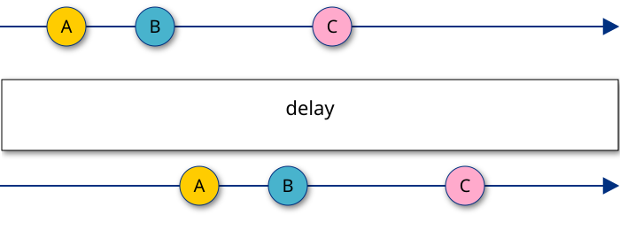
pace
Ensures that the next step is executed at an expected pace, whatever the one of the input is. The calculation applies independently to each minion.
acceleratingPace
Like pace, but reducing the waiting interval at each iteration. Too slow down the pace, you can simply use an accelerator lower than 1.
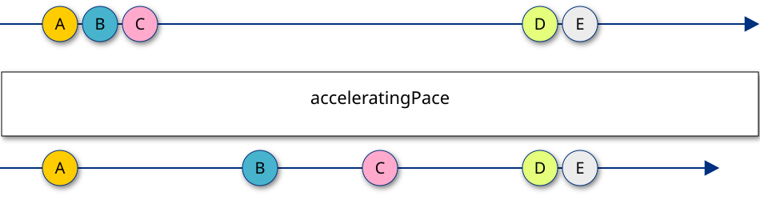
Filter operators
filter
Removes the step contexts having an input not matching the filter specification. It can be seen as a silent equivalent of validate, because it does neither generate any error, nor mark the step context as exhausted.
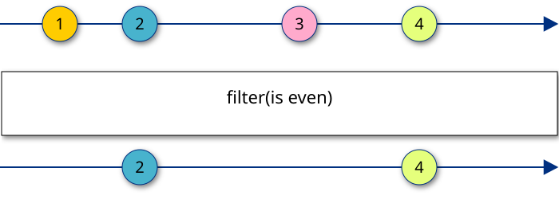
validate
Validates the input. When errors are returned, the step context is marked as exausted and can then only be processed by error processing steps.
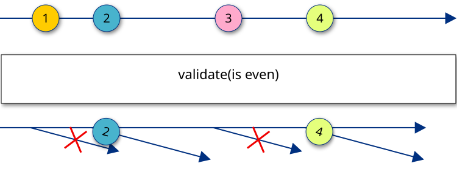
verify
Exactly like validate, but meant to be used for assertions instead of data quality / safety.
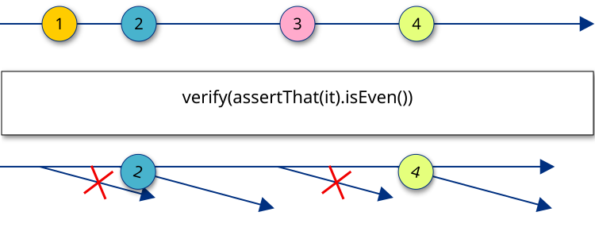
Transformation operators
flatMap
Converts a collective input into single element in the output, using the user-defined strategy.
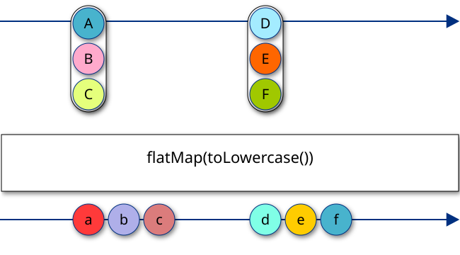
flatten
Converts a collective input into single element in the output, for a known collective type (array, iterable).
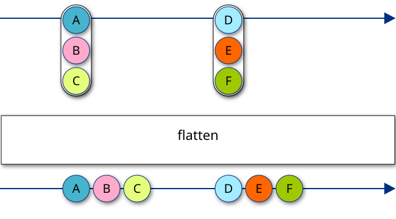
map
Converts each element into another in the output.
mapWithContext provides the same capability with the step context as additional argument.
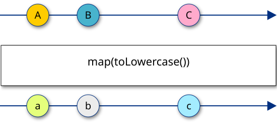
onEach
Executes one or several statements on each element of the input, and forwards them unchanged to the output.
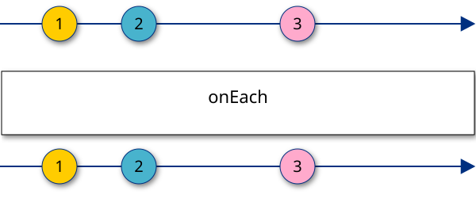
Caching operators
shelve
Caches the provided values in a shared cache.When using a distributed architecture, make sure the cached value can be serialized by the used implementation of shared state registry.The ID of the minion is automatically added to the key to avoid collusion.
unshelve
Fetches one or more record from the shared state registry, previously shelved with the provided keys for the same minion.
Utility operators
stage
Groups a linear graph of steps. Stages are not mandatory in a scenario, but provide a convenient way to iterate, waiting for the last step to be completed before looping back.
1
2
3
4
5
6
stage("my-stage") {
map { it * 3 }.map { arrayOf(it, it + 100) }.flatten() (1)
}.configure { (2)
iterate(5)
}
| 1 | Create a chain of steps, where no split() is allowed. |
| 2 | You can configure the whole stage to repeat from its beginning only once the tail step is completed |
Combining operators
collect
Collects inputs across all the minions and releases them as a list, within the latest received step context.
This operator can be seen as the opposite of the flatten.
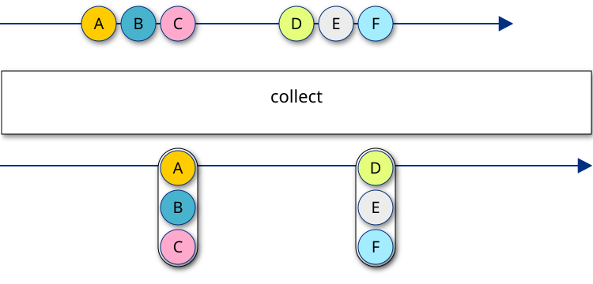
Configuration
Starting QALIPSIS in different modes
Only few modes are supported for now, where head and factories are starting in the same instance of QALIPSIS.
Interactive
Execute QALIPSIS with the option --prompt or -p to be prompted to enter the main configuration:
java -jar my-scenario-qalipsis.jar --promptYou will be asked to enter the load factor, speed factor and so on.
Select the scenarios to execute
You can pass selectors for the scenarios to execute, using the option --scenarios or -s.
The value is a comma-separated list of exact values or patterns of the scenarios to include.
The pattern can contain the wildcards * to match zero or more signs or ? to match exactly one sign.
java -jar my-scenario-qalipsis.jar --scenarios "my-first-scenario, ?y-*-s*n?rio"Runtime configuration
Command-line arguments
campaign.minions-count-per-scenario, integer, default is the number as described in Configuring a scenario specification.
Defines how many minions should be used in the load-injected tree.
No compliant with campaign.minions-factor.
campaign.minions-factor, double, default to 1
Multiplies the default number of minions of each scenario by the provided value.
Can be between 0 and 1 to reduce the default value.
No compliant with campaign.minions-count-per-scenario.
campaign.speed-factor, double, default to 1
Applies on the ramp-up to accelerate or slow down the pace of the minions to be started.
All the command-line arguments can also be provided in a file, as explained in next section.
External property sources
QALIPSIS uses Micronaut’s runtime underneath. Hence, you can use its mechanism of externalized configuration with property sources.
You can overwrite the default configuration and add your own properties creating a file application-config.yml either in the class path or in the working directory.
For your convenience, you can also specified additional environments using the parameter --environments (shorthand -e) and the required list:
java -jar my-scenario-qalipsis.jar -e my-scenario,productionWhen doing such, the configuration files application-my-scenario.{extension} and application-production.{extension} will be applied, where {extension} can be .properties, .json or .yml.
Injecting configuration in a scenario
You can inject values into your scenario or its declaring class using the annotation @io.qalipsis.api.annotations.Property.
class EcommercePurchase(@Property("ecommerce-purchase.load") private val numberOfMinions: Int) {
@Scenario
fun fromLoginToCheckout(@Property("ecommerce-purchase.action-pace") actionPaceDuration: Duration) {
scenario("login-select-and-checkout"){
minionsCount = numberOfMinions
}
.constantPace(actionPaceDuration.toMillis())
// ...
}
}Dependencies injection
QALIPSIS relies on the dependency injection framework from Micronaut and supports the injection of dependencies in the constructors of the scenario declaring classes as well as in the methods annotated with @Scenario.
Ensure you have the following dependency in the project where your beans or factories are compiled: kapt("io.qalipsis:api-processors:0.2.0-SNAPSHOT")
|
Injection of a singleton bean
You can declare a singleton bean using the annotation @jakarta.inject.Singleton on a type, or use a Micronaut factory.
import jakarta.inject.Singleton
@Singleton (1)
class NoRetry : RetryPolicy {
suspend fun <I, O> execute(context: StepContext<I, O>, executable: suspend (StepContext<I, O>) -> Unit){
executable(context)
}
}
@Factory
class ExecutorFactory {
@Singleton (2)
fun simpleExecutor(retryPolicy: RetryPolicy): Executor { (3)
return SimpleExecutor(retryPolicy)
}
}| 1 | The annotation @jakarta.inject.Singleton can be added to a class to automatically create a bean and declare it as singleton |
| 2 | The annotation @jakarta.inject.Singleton added to a method declares the returned bean as a singleton |
| 3 | The retry policy is automatically injected into the factory method |
Once beans are created, you can inject them in the constructor or the scenario method:
class EcommercePurchase(private val retryPolicy: RetryPolicy) { (1)
@Scenario
fun fromLoginToCheckout(executor: Executor) { (2)
scenario("login-select-and-checkout"){
retryPolicy(retryPolicy)
}
// ...
}
}| 1 | The previously created bean of type RetryPolicy is injected in the constructor of the scenario declaring class. |
| 2 | The previously created bean of type Executor is injected in the scenario declaring method. |
Qualifying the bean to inject
When several beans exist for the same type, you might want to select the one to inject. QALIPSIS supports named injection:
import jakarta.inject.Named
class EcommercePurchase(@param:Named("default") private val retryPolicy: RetryPolicy) { (1)
@Scenario
fun fromLoginToCheckout(@Named("simple") executor: Executor) { (2)
scenario("login-select-and-checkout"){
retryPolicy(retryPolicy)
}
// ...
}
}| 1 | When the constructor parameter is a property, precise the target of the annotation. |
| 2 | The annotation @Named selects the bean of type Executor qualified by the name "simple" for the injection. |
While QALIPSIS only supports name qualifiers, you can read more about other qualifiers on Micronaut documentation.
Inject a property value
Properties for the runtime property sources are also injectable in scenario declaring classes constructors and methods.
import io.qalipsis.api.annotations.Property
class EcommercePurchase {
@Scenario
fun fromLoginToCheckout(@Property(name = "ecommerce-purchase.action-pace", orElse = "10s") actionPaceDuration: Duration) { (1)
scenario("login-select-and-checkout"){
// ...
}
.constantPace(actionPaceDuration.toMillis())
// ...
}
}The default value set in orElse is optional.
More about the property sources on Micronaut documentation.
Injectable container types
QALIPSIS supports the injection of a single instance of beans as shown above, as well as an Iterable or any of its subtypes - Collection, List, Set and their derivatives and Optional - also for properties.
Iterable and Optionalclass EcommercePurchase(private val retryPolicies: List<RetryPolicy>) {
@Scenario
fun fromLoginToCheckout(@Property("startDelay") executor: Optional<Duration>) {
// ...
}
}Summary
The following sample of code shows all the supported methods of injection for beans and properties.
The example only shows for a scenario method, but this can only be used for the constructor of a class declaring scenarios.
@Scenario
fun fromLoginToCheckout(
classToInject: ClassToInject, (1)
mayBeOtherClassToInject: Optional<OtherClassToInject>, (2)
@Named("myInjectable") namedInterfaceToInject: InterfaceToInject, (3)
injectables: List<InterfaceToInject>, (4)
@Named("myInjectable") namedInjectables: List<InterfaceToInject>, (5)
@Property(name = "this-is-a-test") property: Duration, (6)
@Property(name = "this-is-another-test", orElse = "10") propertyWithDefaultValue: Int, (7)
@Property(name = "this-is-yet-another-test") mayBeProperty: Optional<String> (8)
) {
}| 1 | An instance of ClassToInject is injected, failing if missing |
| 2 | An instance of Optional<OtherClassToInject> is injected, replaced by an empty optional if missing |
| 3 | An instance of InterfaceToInject qualified by the name myInjectable is injected, failing if missing |
| 4 | A List of all the instances of classes inheriting from InterfaceToInject is injected |
| 5 | A List of all the instances of classes inheriting from InterfaceToInject and qualified by the name myInjectable is injected |
| 6 | The value of the property this-is-a-test is injected after its conversion to a Duration, failing if missing |
| 7 | The value of the property this-is-another-test is injected after its conversion to a Int, replace by 10 as Int if missing |
| 8 | The value of the property this-is-yet-another-test is injected after its conversion to a String, replaced by an empty optional if missing |
Plugins
What is a plugin?
Introduction
A plugin is a technical extension designed to extend the core capabilities of the tools.
The plugin mechanism tackles the complexity implied by the multiplicity of technologies and use cases to support in the tool, and reduce the coupling between the technical elements, keeping them safer and easier to maintain.
The main advantages of a plugin strategy for extension are the drastic reduction of the weight of the required libraries to run a scenario and a better user / developer experience, letting them focus on what is absolutely relevant to them. Among other user / developer experience benefits, we can list smaller list of proposal when using auto-completion, faster compilation time, faster start time, smaller artefacts to store, transport and share.
By nature, a plugin is an optional component of the tool. You only include what you need, ignoring components and libraries that do not serve your needs your present critical concerns.
While a certain number of plugins are proposed by the community to cover the most common use cases and technologies, a plugin can also be an extension only for yourself and remain private.
What does a plugin can do?
A plugin contains one or several technical functionalities of the software, that are not part of the core. Or at least not as such. The most common functionalities a plugin might implement are:
-
A step to perform actions, like:
-
executing requests on an remote system using a specific protocol
-
polling data from a source
-
transforming data
-
-
Events logger
-
Metrics registry to a datastore
-
Cache storage
-
Messaging platform or protocol
All those functionalities are already implemented in the core with default implementations, which might not suit productive testing or constant monitoring. Plugins improve the coverage of the different technologies by providing related implementations.
How and when is a plugin integrated to my deployment?
To create a test scenario, a tiny Gradle/Maven project is required. The plugin is simply added as a dependency to the class path of the project. You can read more about it in the documentation to create a scenario.
If the development of a scenario requires the plugin to compile - like when using a step - the dependency to the plugin artefact has to be added to the implementation dependencies.
If the plugin delivers functionalities you only need at runtime, add it to the runtimeOnly dependencies.
In case of doubt, you can still add to the implementation dependencies - api if the relationship between the executable project and the dependency is transitive.
Do I always need a plugin?
While plugins provide best practices and a convention to perform recurrent operations, they might not be always necessary. One-time show case or simple actions do not require to develop a plugin: the source code you create and need is directly part of your scenario project source and packaged into the executable archive.
Use a QALIPSIS plugin
QALIPSIS provides a bunch of plugins targeting different technologies, systems and protocols.
To use a plugin, just add the related dependency to your project.
Gradle - Groovy DSL:
implementation group:'io.qalipsis', name: 'plugin-XXX', version: '0.2.0-SNAPSHOT'Gradle - Kotlin DSL:
implementation("io.qalipsis:plugin-XXX:0.2.0-SNAPSHOT")Maven:
<dependency>
<groupId>io.qalipsis</groupId>
<artifactId>plugin-XXX</artifactId>
<version>0.2.0-SNAPSHOT</version>
</dependency>You can find the list of available plugins and their related documentation on the dedicated site.
Create your own plugin
TO DO